# Check if installed and load
# Simple Features, used for working with spatial data.
library(sf) # Simple Features, spatial data manipulation
library(dplyr) # Data manipulation and transformation
library(ggplot2) # Data visualization
library(basemapR) # Static maps
library(viridis) # Color palettes for data visualization
library(factoextra) # Visualising clustering results
# Clustering and Dimensionality Reduction
library(dbscan) # Density-based spatial clusteringLab in R
Points
Think about the last time you walked through a city. Some things around you — lamp posts, bus stops, benches — sit exactly where they were put, and stay there. Others — where a crime happened, where someone hailed a taxi, where a photo was taken — could have happened almost anywhere, but happened to happen right there. Points, it turns out, can be read in two completely different ways.
NoteTwo ways to think about a point
Fixed objects — the location is just a given fact (a bus stop is where it is). Analysing these is a lot like analysing polygons or lines: the geometry describes something that already exists.
Events — the location is the interesting part. The thing could theoretically have happened anywhere, but it manifested here rather than there. This is the lens we’ll use for the rest of this notebook.
When we zoom out from a single event to a whole collection of them, we get a point pattern — and the arrangement of those points becomes the object of study in its own right.
🔎 Think of crime in a city. In principle, a crime could happen on almost any street corner. In practice, they cluster — some blocks see them constantly, others almost never. That clustering (or lack of it) is exactly what point pattern analysis is built to describe.
Point patterns come in two flavours:
- Unmarked — all you have is where. Just the coordinates of each crime, nothing else.
- Marked — you also know what. The type of crime, the damage caused, the time of day — extra attributes riding along with each location.
TipThe questions driving this notebook
- What’s the shape of the distribution — clustered, dispersed, random?
- Is there structure we can actually detect statistically, or does it just look like a pattern to the human eye?
- Why here and not there? What process could be generating what we see?
This notebook is a gentle, hands-on introduction to working with point patterns in R — reading them in, transforming them, and building up a toolkit of ways to visualize what they’re telling you.
Installing Packages
Data
We are going to continue with Airbnb data in a different part of the world.
Airbnb Buenos Aires
Let’s read in the point dataset:
# read the AirBnb listing
listings <- read.csv("data/BuenosAires/listings_nooutliers.csv")
summary(listings) id name host_id host_name
Min. : 6283 Length:18572 Min. : 2616 Length:18572
1st Qu.:18460148 Class :character 1st Qu.: 13834944 Class :character
Median :31758329 Mode :character Median : 66033824 Mode :character
Mean :28673848 Mean :108620951
3rd Qu.:40007128 3rd Qu.:188964374
Max. :51100644 Max. :412506828
neighbourhood_group neighbourhood latitude longitude
Mode:logical Length:18572 Min. :-34.69 Min. :-58.53
NA's:18572 Class :character 1st Qu.:-34.60 1st Qu.:-58.43
Mode :character Median :-34.59 Median :-58.41
Mean :-34.59 Mean :-58.42
3rd Qu.:-34.58 3rd Qu.:-58.39
Max. :-34.53 Max. :-58.36
room_type price minimum_nights number_of_reviews
Length:18572 Min. : 218 Min. : 1.000 Min. : 0.00
Class :character 1st Qu.: 1800 1st Qu.: 2.000 1st Qu.: 0.00
Mode :character Median : 2790 Median : 3.000 Median : 3.00
Mean : 5424 Mean : 6.996 Mean : 15.92
3rd Qu.: 4470 3rd Qu.: 5.000 3rd Qu.: 16.00
Max. :962109 Max. :730.000 Max. :500.00
last_review
Length:18572
Class :character
Mode :character
Let’s finish preparing it:
# locate the longitude and latitude
names(listings) [1] "id" "name" "host_id"
[4] "host_name" "neighbourhood_group" "neighbourhood"
[7] "latitude" "longitude" "room_type"
[10] "price" "minimum_nights" "number_of_reviews"
[13] "last_review" listings <- listings %>%
st_as_sf(coords = c(8, 7)) %>% # create pts from coordinates
st_set_crs(4326) # set the crsAdminstrative Areas
We will later use administrative areas for aggregation. Let’s load them.
BA <- read_sf("data/BuenosAires/neighbourhoods_BA.shp") #read shp
BA <- st_make_valid(BA) # make geometry validSpatial Join
# spatial overlay between points and polygons
listings_BA <- st_join(BA, listings)
# read the first lines of the attribute table
head(listings_BA)Simple feature collection with 6 features and 13 fields
Geometry type: MULTIPOLYGON
Dimension: XY
Bounding box: xmin: -58.46683 ymin: -34.59783 xmax: -58.43854 ymax: -34.57829
Geodetic CRS: WGS 84
# A tibble: 6 × 14
neighbourh neighbou_1 geometry id name host_id host_name
<chr> <chr> <MULTIPOLYGON [°]> <int> <chr> <int> <chr>
1 Chacarita <NA> (((-58.45261 -34.59584, … 24763 Amaz… 1.01e5 Sebastian
2 Chacarita <NA> (((-58.45261 -34.59584, … 234002 LOVE… 1.23e6 Mariana
3 Chacarita <NA> (((-58.45261 -34.59584, … 447786 METR… 9.75e5 Alejandro
4 Chacarita <NA> (((-58.45261 -34.59584, … 589147 Grea… 2.91e6 Marcos
5 Chacarita <NA> (((-58.45261 -34.59584, … 644840 Mode… 1.23e8 Matias
6 Chacarita <NA> (((-58.45261 -34.59584, … 702905 Stud… 3.61e6 Bond
# ℹ 7 more variables: neighbourhood_group <lgl>, neighbourhood <chr>,
# room_type <chr>, price <int>, minimum_nights <int>,
# number_of_reviews <int>, last_review <chr>One-to-one
The first approach we review here is the one-to-one approach, where we place a dot on the screen for every point to visualise. We are going to use ggplot and plot the points by neighbourhood.
ggplot() +
geom_sf(data = listings, aes(color = neighbourhood))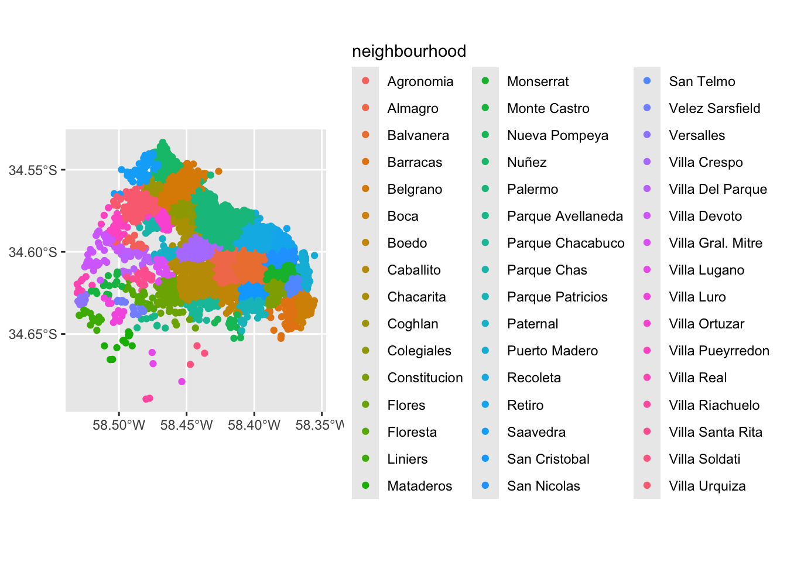
We can visualise a bit better with a basemap
Important
CARTO retired free, unauthenticated access to their tiles (dark, positron, voyager, hydda) — using them without your own CARTO API key now returns a tile stamped “API KEY REQUIRED”. google-* styles need their own separate Google Maps API key too. mapnik (plain OpenStreetMap tiles) stays free and key-free.
ggplot() +
base_map(st_bbox(listings), basemap = 'mapnik', increase_zoom = 2) +
geom_sf(data = listings, aes(color = neighbourhood), size = 0.5, alpha = 0.5) +
theme(legend.position = "none")attribution: © <a href="https://www.openstreetmap.org/copyright">OpenStreetMap</a> contributors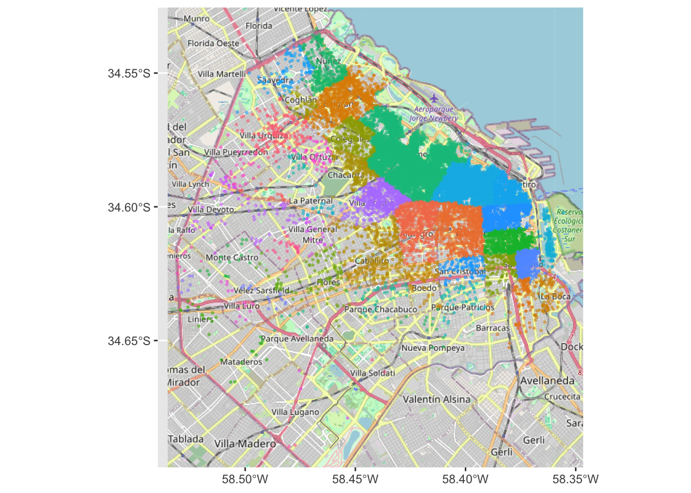
Points meet polygons
The approach presented above works until a certain number of points to plot; tweaking dot transparency and size only gets us so far and, at some point, we need to shift the focus. Having learned about visualizing lattice (polygon) data, an option is to “turn” points into polygons and apply techniques like choropleth mapping to visualize their spatial distribution. To do that, we will overlay a polygon layer on top of the point pattern, join the points to the polygons by assigning to each point the polygon where they fall into, and create a choropleth of the counts by polygon.
This approach is intuitive but of course raises the following question: what polygons do we use to aggregate the points? Ideally, we want a boundary delineation that matches as closely as possible the point generating process and partitions the space into areas with a similar internal intensity of points. However, that is usually not the case, no less because one of the main reasons we typically want to visualize the point pattern is to learn about such generating process, so we would typically not know a priori whether a set of polygons match it. If we cannot count on the ideal set of polygons to begin with, we can adopt two more realistic approaches: using a set of pre-existing irregular areas or create a artificial set of regular polygons. Let’s explore both.
Irregular lattices
To exemplify this approach, we will use the administrative areas we have loaded above. Let’s add them to the figure above to get better context (unfold the code if you are interested in seeing exactly how we do this):
ggplot() +
geom_sf(data = BA, fill = NA, size = 1.5) +
geom_sf(data = listings, aes(color = neighbourhood), size = 0.5, alpha = 0.5) +
theme(legend.position="none")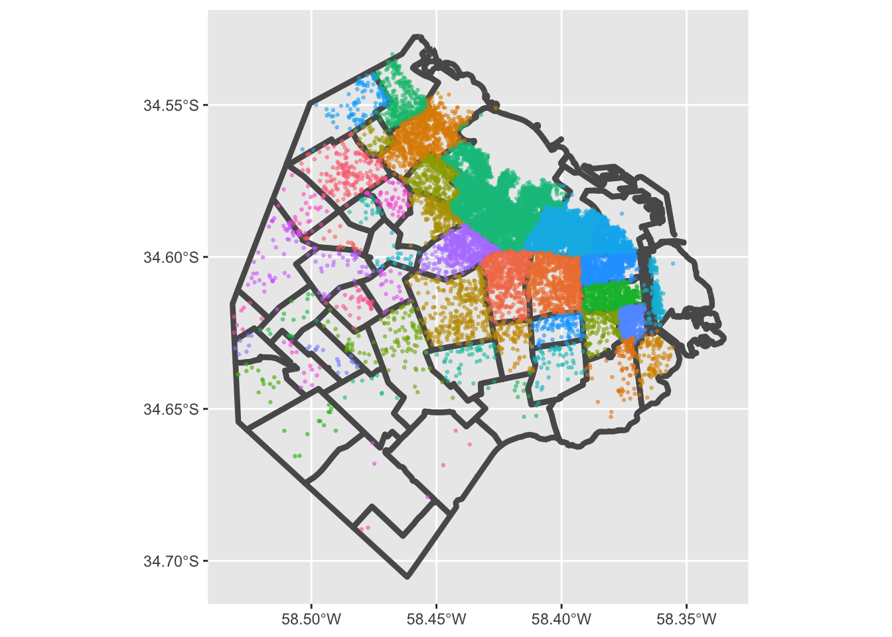
Now we need to know how many airbnb each area contains. Our airbnb table already contains the neighbourhood ID following our use of st_join. Now, all we need to do is counting by area and attaching the count to the areas table. We can also calculate the mean price of each area.
We rely here on the group_by function which takes all the airbnbs in the table and group them by neighbourhood. Once grouped, we apply function n(), which counts how many elements each group has and returns a column indexed on the neighbourhood level with all the counts as its values. We end by assigning the counts to a newly created column in the table.
This chunk may take a bit longer to run:
# aggregate at district level
airbnb_neigh_agg <- listings_BA %>%
group_by(neighbourh) %>% # group at neighbourhood level
summarise(count_airbnb = n(), # create count
mean_price = mean(price)) # average price
head(airbnb_neigh_agg)Simple feature collection with 6 features and 3 fields
Geometry type: POLYGON
Dimension: XY
Bounding box: xmin: -58.50354 ymin: -34.6625 xmax: -58.33515 ymax: -34.53153
Geodetic CRS: WGS 84
# A tibble: 6 × 4
neighbourh count_airbnb mean_price geometry
<chr> <int> <dbl> <POLYGON [°]>
1 Agronomia 18 2295. ((-58.4769 -34.59453, -58.47671 -34.594, -…
2 Almagro 682 3803. ((-58.41312 -34.61342, -58.41332 -34.61285…
3 Balvanera 930 2920. ((-58.41213 -34.5993, -58.41226 -34.60011,…
4 Barracas 123 11394. ((-58.37036 -34.63269, -58.37044 -34.63193…
5 Belgrano 807 4167. ((-58.45162 -34.53155, -58.45164 -34.53156…
6 Boca 99 2803. ((-58.3555 -34.61882, -58.35581 -34.61811,…The lines above have created a new column in our table called count_airbnb that contains the number of airbnb that have been taken within each of the polygons in the table. mean_price shows the mean price per neighbourhood.
At this point, we are ready to map the counts. Technically speaking, this is a choropleth just as we have seen many times before:
map_BA <- ggplot()+
geom_sf(data = airbnb_neigh_agg, inherit.aes = FALSE, aes(fill = count_airbnb), colour = "white") +
scale_fill_viridis("Count", direction = -1, option = "viridis" ) +
ggtitle("Count of Airbnbs by Neighbourhood") +
geom_sf_text(data = airbnb_neigh_agg,
aes(label = neighbourh),
fun.geometry = sf::st_centroid, size=2) +
theme_void()
map_BA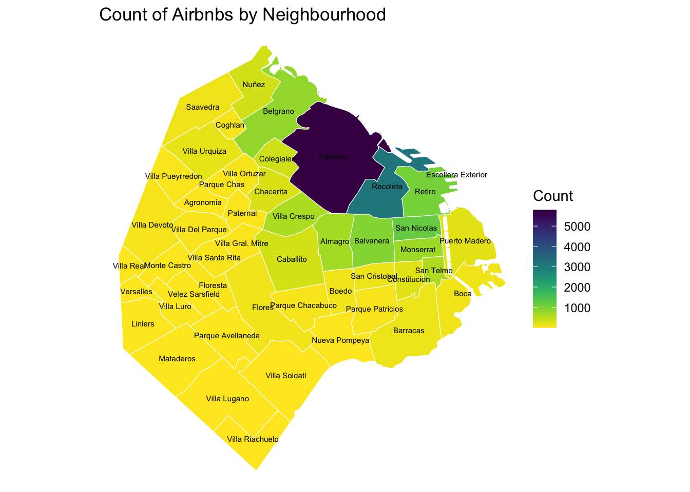
The map above clearly shows a concentration of airbnb in the neighbourhoods of Palermo and Recoleta. However, it is important to remember that the map is showing raw counts. In the case of airbnbs, as with many other phenomena, it is crucial to keep in mind the “container geography” (MAUP). In this case, different administrative areas have different sizes. Everything else equal, a larger polygon may contain more photos, simply because it covers a larger space. To obtain a more accurate picture of the intensity of photos by area, what we would like to see is a map of the density of photos, not of raw counts. To do this, we can divide the count per polygon by the area of the polygon.
Let’s first calculate the area in Sq. metres of each administrative delineation:
# Calculate area in square kilometers and add it to the data frame
airbnb_neigh_agg <- airbnb_neigh_agg %>%
mutate(area_km2 = as.numeric(st_area(.) / 1e6)) # 1e6 just means 1000000
# Calculate density
airbnb_neigh_agg <- airbnb_neigh_agg %>%
mutate(density = count_airbnb / area_km2)With the density at hand, creating the new choropleth is similar as above:
map_BA_density <- ggplot()+
geom_sf(data = airbnb_neigh_agg, inherit.aes = FALSE, aes(fill = density), colour = "white") +
scale_fill_viridis("Density", direction = -1, option = "viridis") +
ggtitle("Density of Airbnbs by Neighbourhood") +
geom_sf_text(data = airbnb_neigh_agg,
aes(label = neighbourh),
fun.geometry = sf::st_centroid, size=2) +
theme_void()
map_BA_density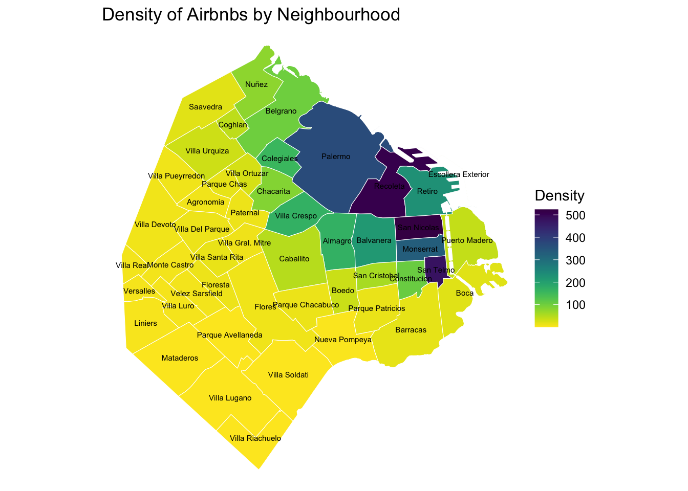
We can see some significant differences. Why is that? Have a chat with the person next to you.
Regular lattices: hex-binning
Sometimes we either do not have any polygon layer to use or the ones we have are not particularly well suited to aggregate points into them. In these cases, a sensible alternative is to create an artificial topology of polygons that we can use to aggregate points. There are several ways to do this but the most common one is to create a grid of hexagons. This provides a regular topology (every polygon is of the same size and shape) that, unlike circles, cleanly exhausts all the space without overlaps and has more edges than squares, which alleviates edge problems.
Important
If you are still still not sure on the difference between geographic coordinate systems and projected coordinated system go back to Lecture 1.
First we need to make sure we are in a projected coordinated system:
BA_proj <- st_transform(BA, 22176) # CRS for Argentina
listings_proj <- st_transform(listings, st_crs(BA_proj)) # Making sure both files have the same crs
# You can plot to check the data overlaps correctly
# plot(BA$geometry)
# plot(listings$geometry, add=TRUE)Then we create a grid that’s 500 metre by 500 metres. We need to be in a projected coordinate system for this to work.
grid <- st_make_grid(
BA_proj,
cellsize = 500,
crs = 4326,
what = "polygons",
square = FALSE) # creation of grid
plot(grid) # plot grid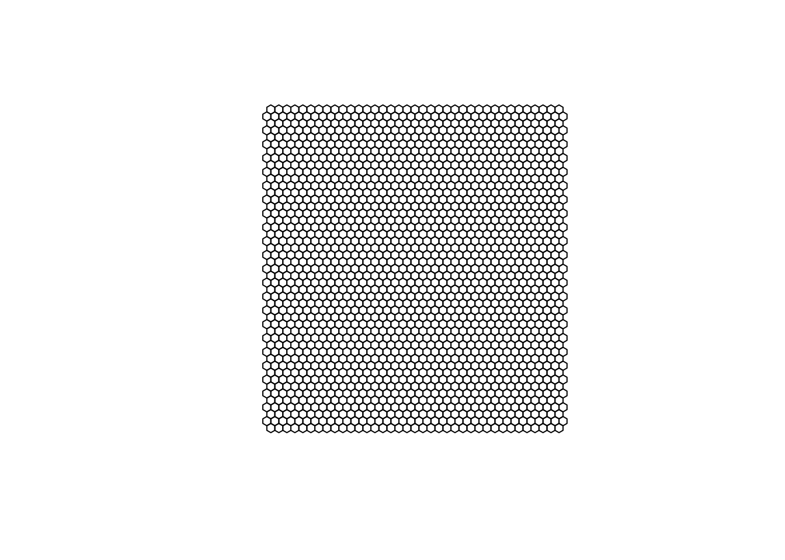
To avoid any issues, convert the grid to an sf objects, which extends data.frame-like objects with a simple feature list column.
# Convert 'grid' to a simple features object
grid <- st_sf(grid)
# Add a new column 'n_airbnb' with counts of intersections with 'listings_proj'
grid <- grid %>% mutate(n_airbnb = lengths(st_intersects(grid, listings_proj)))
# Filter rows where 'n_airbnb' is greater than 1
grid_filtered <- filter(grid, n_airbnb > 1)Let’s unpack the coded here:
mutate: This is a function from thedplyrpackage we’ve used many times before and it is used to add new variables or modify existing variables in a data frame.lengths: This function is used to compute the lengths of the elements in a list. Here, it is applied to the result of thest_intersectsfunction.st_intersects(grid, listings_proj): This is a spatial operation using thesfpackage. It checks for spatial intersections between the objects in the grid and listings_proj data frames. This operation returns a list where each element corresponds to the intersections of a grid cell with the listings.- The result of
st_intersectsis passed tolengthsto determine the number of intersections for each grid cell.
The final result is that a new variable n_airbnb is added to the grid data frame, representing the number of intersections (or occurrences) for each grid cell with the listings in listings_proj.
ggplot() +
geom_sf(data = grid_filtered, aes(fill = n_airbnb), color = "white", linewidth = 0.1) +
scale_fill_viridis("Airbnb\ncounts", direction = -1, trans = "log10") +
ggtitle("Hex-binned Airbnb counts") +
theme_void()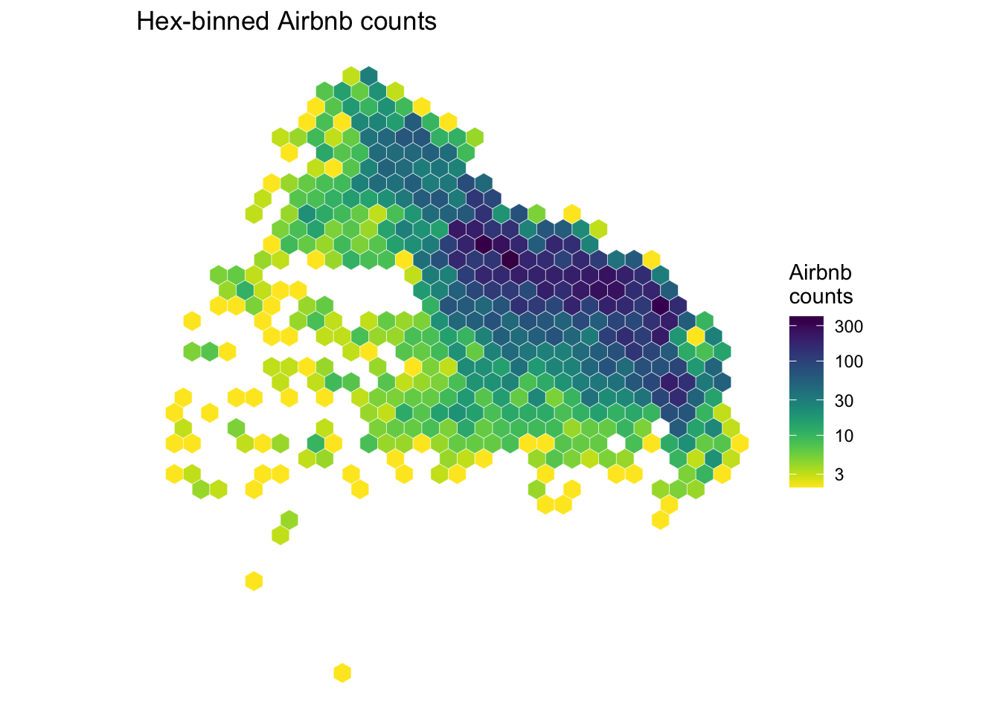
Kernel Density Estimation
Hex-binning is a quick fix when you don’t have a sensible polygon layer to aggregate into. But it doesn’t escape the modifiable areal unit problem — we’re still drawing arbitrary boundaries and counting inside them, so the result can still mismatch the underlying pattern.
Kernel density estimation (KDE) avoids the problem entirely by never aggregating into areas at all. Instead of asking “how many points fell inside this box?”, KDE asks “how much point-ness is there at this exact spot?” — counting nearby points more heavily than distant ones, and producing a smooth continuous surface rather than a set of bins.
NoteThe one parameter that matters: bandwidth
Bandwidth controls how far each point’s influence spreads.
- Small bandwidth → a spiky surface that tracks individual points. Lots of detail, lots of noise.
- Large bandwidth → a smooth blob. Clean, but real local structure gets washed out.
There is no single “correct” value. Choosing one is a judgement call about what scale of pattern you’re trying to show.
Kernel densities with ggplot
The good news: you don’t need any extra packages for this. ggplot2 can compute a KDE directly with geom_density_2d_filled(), which is the same approach the Python version of this lab uses via seaborn.
It needs plain x/y columns rather than an sf geometry column, so we pull the coordinates out first. Note we use listings_proj (projected, in metres) rather than the unprojected version — distances need to be meaningful for the smoothing to make sense.
listings_xy <- listings_proj |>
st_coordinates() |>
as.data.frame()
head(listings_xy) X Y
1 6370625 6170263
2 6369329 6172840
3 6371878 6171108
4 6368858 6171542
5 6368858 6171542
6 6368858 6171542Now we can map it:
ggplot(listings_xy, aes(x = X, y = Y)) +
geom_density_2d_filled(bins = 12) +
scale_fill_viridis_d(name = "Density") +
coord_sf() +
ggtitle("KDE of Airbnbs in Buenos Aires") +
theme_void()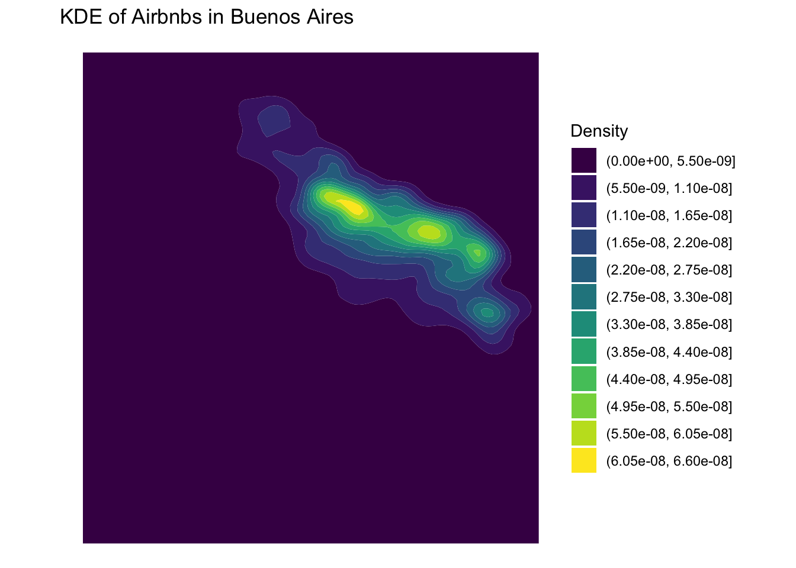
Let’s unpack that:
geom_density_2d_filled()does the density estimation and the filled-contour drawing in one step.bins = 12sets how many contour bands to draw — more bands, finer gradation.coord_sf()keeps the aspect ratio correct so the map isn’t stretched.
We can add the neighbourhood boundaries for context. Because the boundaries are an sf object and our density layer isn’t, we need inherit.aes = FALSE so geom_sf doesn’t try to reuse the x/y aesthetics:
ggplot(listings_xy, aes(x = X, y = Y)) +
geom_density_2d_filled(bins = 12) +
geom_sf(data = BA_proj, fill = NA, colour = "white",
linewidth = 0.2, inherit.aes = FALSE) +
scale_fill_viridis_d(name = "Density") +
coord_sf() +
ggtitle("KDE of Airbnbs in Buenos Aires") +
theme_void()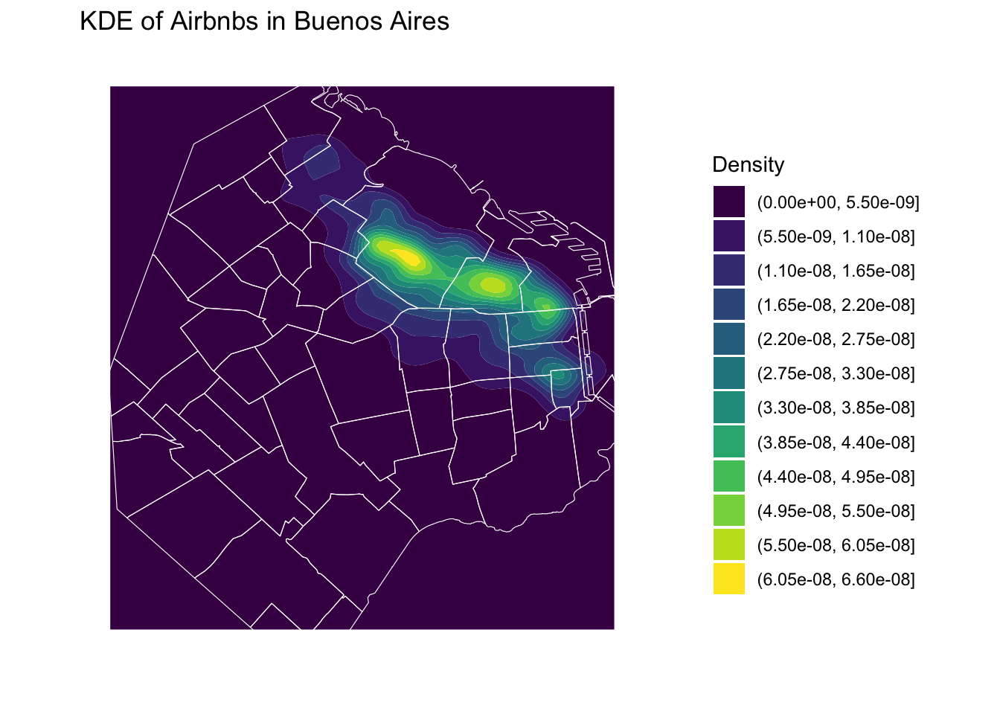
Changing the bandwidth
The adjust argument multiplies the default bandwidth: values below 1 give a spikier surface, above 1 a smoother one. Compare these two against the default above:
# Half the default bandwidth -- more local detail
ggplot(listings_xy, aes(x = X, y = Y)) +
geom_density_2d_filled(bins = 12, adjust = 0.5) +
scale_fill_viridis_d(name = "Density") +
coord_sf() +
ggtitle("Bandwidth: adjust = 0.5") +
theme_void()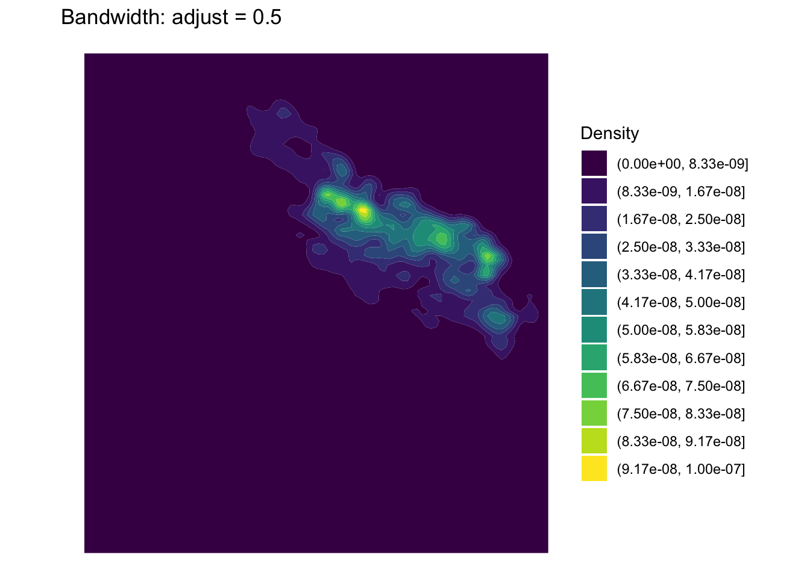
# Double the default bandwidth -- much smoother
ggplot(listings_xy, aes(x = X, y = Y)) +
geom_density_2d_filled(bins = 12, adjust = 2) +
scale_fill_viridis_d(name = "Density") +
coord_sf() +
ggtitle("Bandwidth: adjust = 2") +
theme_void()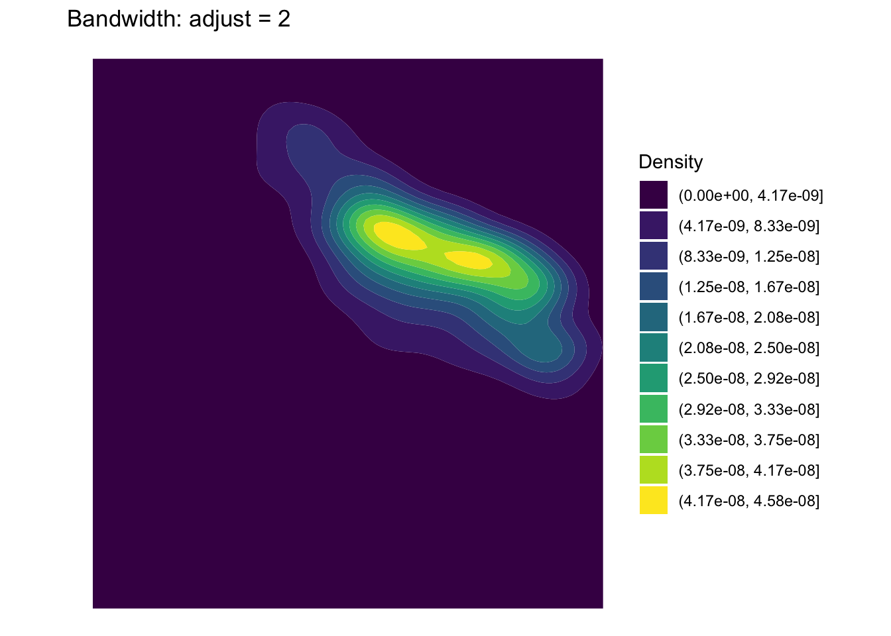
WarningThese are working maps, not finished ones
Everything we’ve mapped so far is deliberately rough — the point has been to see what the method does, not to produce something publication-ready. Look closely and you’ll spot plenty that still needs fixing:
- The legend labels are raw contour brackets like
(0.0e+00, 5.0e-09]— technically correct, meaningless to a reader - No scale bar, no north arrow, no source credit
"Density"as a legend title says nothing about what is dense, or in what units- No basemap or boundaries for geographic context on most of them
- Titles are debugging notes to ourselves (
"Bandwidth: adjust = 2"), not something you’d caption in a report
Before any of these went into a piece of written work, you’d want to clean all of that up — much like we did in the choropleths lab, where we built up a final map with a proper title, palette, north arrow, scale bar and source.
TipHave a think
Which of the three bandwidths would you actually put in a report, and why? There’s no right answer — it depends on whether you’re trying to show where the main concentrations are or how fine-grained the clustering gets.
NoteGoing further: the
eks package
geom_density_2d_filled() is quick and needs nothing extra, but it has limits. It doesn’t know that Buenos Aires has a boundary, so it will happily smear density out over the river; and adjust is a hand-tuned multiplier rather than a statistically-chosen bandwidth.
If you need more control, the eks package works natively with sf objects and returns contours as sf, so they slot straight into normal geom_sf() mapping:
skde <- eks::st_kde(listings_proj)
ggplot() +
geom_sf(data = eks::st_get_contour(skde), aes(fill = contlabel), colour = NA) +
geom_sf(data = BA_proj, fill = NA, colour = "white", linewidth = 0.2) +
scale_fill_viridis_d(name = "Density") +
theme_void()The other main option is spatstat, which is the most powerful of the three: it handles observation windows properly (so density is only estimated inside your study area) and offers cross-validated bandwidth selection via bw.diggle() and friends. It’s also the most involved — you have to convert your data into its own ppp and owin object classes first.
This is a good moment to practise reading documentation. We’re not going to walk through either package line by line. If you want to use them, go and look at their vignettes, work out what the functions expect, and try it — that skill will serve you far better over the rest of this course than us handing you the code.
Cluster of points (DBSCAN)
Partitioning methods (K-means, PAM clustering) and hierarchical clustering are suitable for finding spherical-shaped clusters or convex clusters. In other words, they work well for compact and well separated clusters. Moreover, they are also severely affected by the presence of noise and outliers in the data.
Unfortunately, real life data can contain: i) clusters of arbitrary shape ii) many outliers and noise.
In this section, we will learn a method to identify clusters of points, based on their density across space. To do this, we will use the widely used DBSCAN algorithm. For this method, a cluster is a concentration of at least m points, each of them within a distance of r of at least another point in the cluster. Points in the dataset are then divided into three categories:
- Noise, for those points outside a cluster.
- Cores, for those points inside a cluster whith at least
mpoints in the cluster within distancer. - Borders for points inside a cluster with less than
mother points in the cluster within distancer.
Both m and r need to be prespecified by the user before running DBSCAN. This is a critical point, as their value can influence significantly the final result. Before exploring this in greater depth, let us get a first run at computing DBSCAN, using the dbscan package, which implements the algorithm.
Data preparation for DBSCAN
DBSCAN’s eps parameter is a real-world distance, so we need our points expressed in a projected CRS with metres as units — not raw longitude/latitude, and not a standardised/scaled version of them, since neither has a meaningful “distance” interpretation. We already have exactly that: listings_proj, created earlier for the hex-binning section, in EPSG:22176 (metres). We just need to pull the X/Y coordinates out into a plain matrix for dbscan:
coords <- st_coordinates(listings_proj)
head(coords) X Y
[1,] 6370625 6170263
[2,] 6369329 6172840
[3,] 6371878 6171108
[4,] 6368858 6171542
[5,] 6368858 6171542
[6,] 6368858 6171542Computing DBSCAN using the dbscan package
First, we set the ‘random seed’, which means that the results will always be the same when running the following commands, since the random aspects of the algorithms are controlled.
set.seed(123456789)Run the DBSCAN algorithm, specifying:
eps: ‘epsilon’, radius (in metres, sincecoordsis projected) of the ‘epsilon neighborhood’ (the maximum point-to-point distance for considering two points to be in the same cluster)minPts: the minimum number of points required to be in the ‘epsilon neighborhoods’ of core points (including the point itself).
We decide to consider a cluster of airbnb with more than 50 airbnbs within 100 metres from them, hence we set the two parameters accordingly — matching the Python lab’s first run exactly:
db <- dbscan::dbscan(coords, eps = 100, minPts = 50)
dbDBSCAN clustering for 18572 objects.
Parameters: eps = 100, minPts = 50
Using euclidean distances and borderpoints = TRUE
The clustering contains 15 cluster(s) and 15239 noise points.
0 1 2 3 4 5 6 7 8 9 10 11 12
15239 767 246 607 463 106 344 165 228 91 59 51 76
13 14 15
29 50 51
Available fields: cluster, eps, minPts, metric, borderPointsUse the results from applying dbscan to plot the example data once more, coloring points according to which cluster dbscan grouped each point in. In the dbscan results, cluster group ‘0’, plotted below in black, indicates ‘noise points’. A ‘noise point’ is one which isn’t close enough to (‘minPts’ - 1) number of other points to be considered part of any cluster.
factoextra::fviz_cluster(db, coords, stand = FALSE, geom = "point", pointsize = 0.5) +
theme_minimal() +
ggtitle("DBSCAN: eps = 100m, minPts = 50")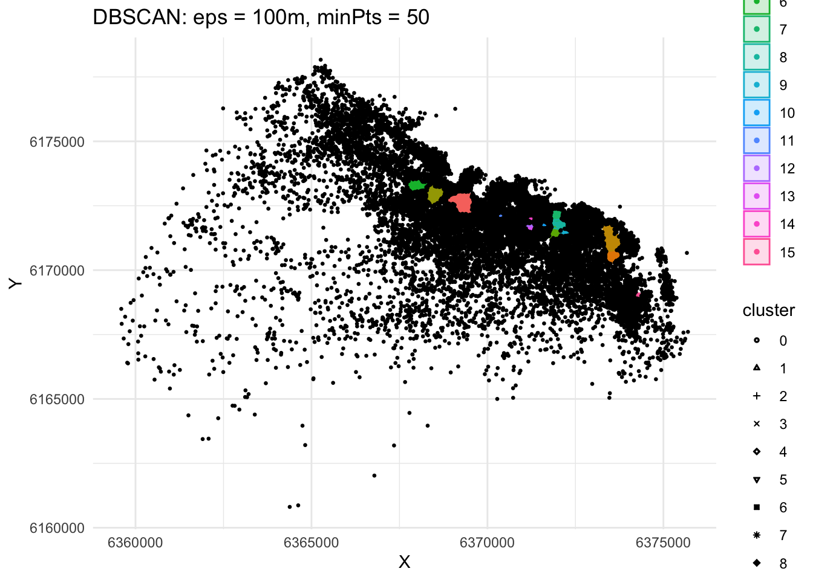
The algorithm is able to identify a few clusters with a high density of airbnbs. However, this is all contingent on the parameters we arbitrarily set. Depending on the maximum radius (eps) we set, we will pick one type of cluster or another: a higher (lower) radius will translate into less (more) local clusters. Equally, the minimum number of points required for a cluster (minPts) will affect the implicit size of the cluster.
For an illustration of this, let’s run through a case with very different parameter values: a larger radius (250m) and a smaller minimum number of points (10) — matching the Python lab’s second run:
db2 <- dbscan::dbscan(coords, eps = 250, minPts = 10)
factoextra::fviz_cluster(db2, coords, stand = FALSE, geom = "point", pointsize = 0.5) +
theme_minimal() +
ggtitle("DBSCAN: eps = 250m, minPts = 10")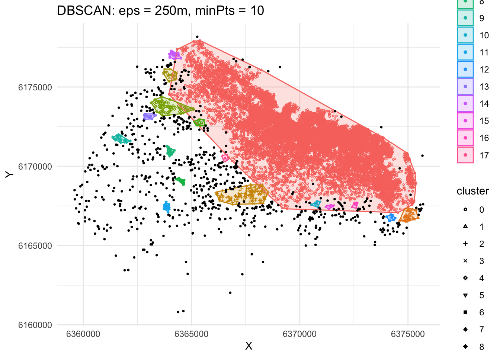
The output is now very different, isn’t it? This exemplifies how different parameters can give rise to substantially different outcomes, even if the same data and algorithm are applied.
The dbscan algorithm is very sensitive to changes to the epsilon and minPts values. Smaller epsilons leads to definition of sparser clusters as noise while larger epsilon sizes may make denser clusters to be merged.
Determining the optimal eps value
Rather than picking eps arbitrarily, think of every point and its distance from its nearest neighbours. We can use a k-nearest-neighbour distance matrix to compute this, with a specified value of k corresponding to minPts.
We then plot these distances in ascending order, with the aim of finding the “knee” — the point where a sharp change occurs along the curve. Points below the knee are close enough together to plausibly be part of a cluster; points above it start looking more like noise. That knee is a reasonable candidate value for eps.
We can use the kNNdistplot() function from the dbscan package — here with k = 50, matching the minPts from our first run:
dbscan::kNNdistplot(coords, k = 50)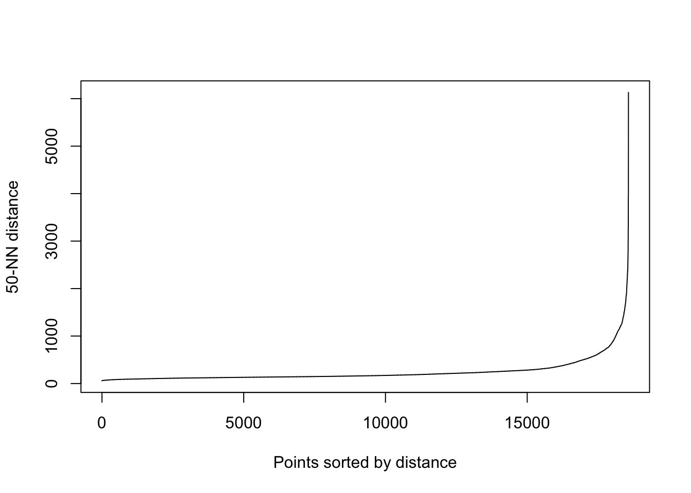
Look for where the curve visibly bends upward — that distance (in metres, since coords is projected) is a defensible choice of eps for this minPts.
A more robust alternative: HDBSCAN
Python’s version of this lab uses A-DBSCAN, an ensemble/adaptive variant of DBSCAN from the esda package that isn’t available in R. The closest equivalent available here is HDBSCAN (Hierarchical DBSCAN), which shares A-DBSCAN’s core motivation — handling clusters of varying density more robustly than vanilla DBSCAN — even though the two algorithms work differently under the hood. HDBSCAN only needs minPts; it works out an appropriate eps internally for each region of the data rather than using one fixed radius everywhere:
hdb <- dbscan::hdbscan(coords, minPts = 50)
hdbHDBSCAN clustering for 18572 objects.
Parameters: minPts = 50
The clustering contains 8 cluster(s) and 5922 noise points.
0 1 2 3 4 5 6 7 8
5922 101 50 224 160 119 917 10991 88
Available fields: cluster, minPts, coredist, cluster_scores,
membership_prob, outlier_scores, hcfactoextra::fviz_cluster(list(data = coords, cluster = hdb$cluster),
stand = FALSE, geom = "point", pointsize = 0.5) +
theme_minimal() +
ggtitle("HDBSCAN")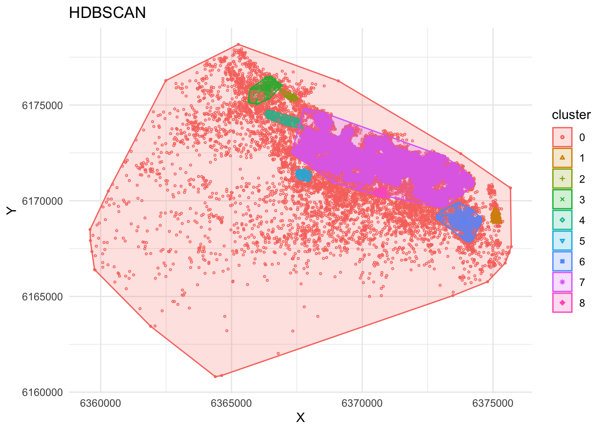
Resources
spatstatdocumentation — the most powerful R option for point pattern analysis, if you want to go beyond this labeksdocumentation —sf-native kernel density estimationggplot22D density docs — thegeom_density_2d_filled()function used in this labdbscanpackage documentation, includinghdbscan()